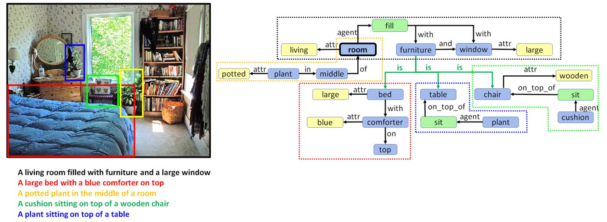
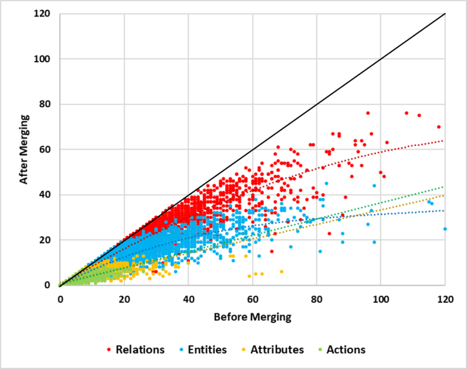
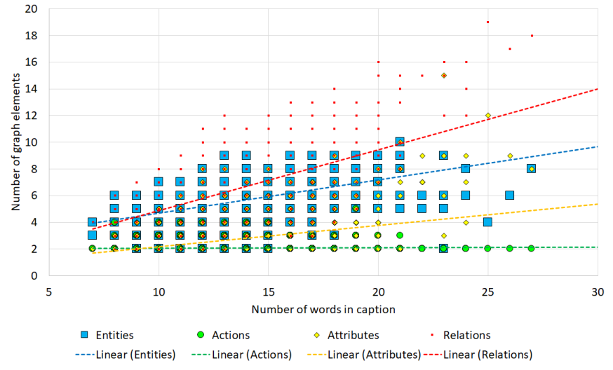

Turning a photo into a graph of what is in it, without training on graphs
A photo of a bedroom is more than a list of objects. The plant is on the table, the cushion sits on a wooden chair, the comforter is blue. A scene graph writes this down as nodes (things) joined by labelled edges (how they relate). Training a model to produce such graphs normally needs huge collections of images that people have annotated with graphs. We tried a different route: let existing models describe small parts of the image in words, then turn those sentences into graphs by fixed rules and merge them.
The problem
A scene graph is built from triplets of the form subject, predicate, object, such as plant, on top of, table. Learning these relations is hard. The number of possible combinations is huge, and a few combinations are very common while most are rare. Supervised models also need images with graph annotations, and the paper notes that these datasets have to be very large. Many existing methods also lean on tricks such as message passing, probabilistic models or statistics of the dataset, which are not easy to explain.
The idea
Our starting point was a hypothesis. A network that can write a caption for a picture must already encode some relational information about it, even if it never outputs a graph. A caption such as "a plant sitting on top of a table" contains a relation in plain language. So instead of building a dedicated graph model, we read the relations out of captions.
One caption for a whole image misses detail, so we caption regions. A pre-trained object detector called YOLO-V3 finds regions of interest. Each region is cropped, padded with zeros so that its shape is not distorted, resized to 224 × 224 pixels and passed to a pre-trained captioning model, Show, Attend and Tell. We kept a single caption per region to avoid redundancy. We trained none of these parts ourselves.

How it works
To turn a caption into a graph, we first run the Stanford dependency parser. It labels how the words of a sentence depend on each other, for example which noun is the subject of which verb. From those labels, simple rules create the graph. Nouns become entity nodes, verbs become action nodes, and adjectives and adverbs become attribute nodes. Pronouns are handled too: "he" gives a masculine person with a "masculine" attribute, and "they" gives people. Auxiliary verbs such as "is" do not become actions.
Edges come from the dependency labels in the same way. A subject of a verb gives an agent edge, a direct object gives a patient edge, and a modifier gives an attr edge. Prepositions produce spatial edges such as on_top_of. Because every step is a written rule, you can trace why any node or edge exists. This is the sense in which the graph generation is explainable.
Table 2 lists some of the rules that turn a dependency into an edge. Read each row as: if the parser finds this dependency between words A and B, the rule adds the edge in the last column. Different dependencies can lead to the same kind of edge. A nominal subject and an oblique agent both give an agent edge, for example.
| Edge type | Dependency | Description | Edge |
|---|---|---|---|
| Agent | A → nsubj → B | Nominal Subject | B → agent → A |
| Agent | A → obl:agent → B | Oblique Agents | B → agent → A |
| Patient | A → obj → B | Direct Object | A → patient → B |
| Patient | A → nsubj:pass → B | Passive Object | A → patient → B |
| Attributes | A → amod → B | Adjectival Modifier | A → attr → B |
| Attributes | A → advmod → B | Adverbial Modifier | A → attr → B |
| Spatial Relations | A → obl:preposition → B | Oblique Dependencies with prepositions | A → preposition → C |
| Spatial Relations | A → nmod:preposition → B | Noun Modifiers with prepositions | A → preposition → C |
| Special relations | A → appos → B | Appositional Modifier | A → is → B |
| Special relations | A → conj → B | Conjunction | A → and → B |

The region graphs overlap, so the last step merges them, using an approximate version of the maximum common subgraph idea (the largest piece two graphs share). Two entities are merged if they have the same lemma (the dictionary form of the word) and their bounding boxes overlap enough: the intersection divided by the area of the smaller box must be above 0.5. Entities with different words can also be merged if WordNet, a database of word meanings, puts them in the same synset, for example dog and hound. After two entities merge, their matching actions and attributes merge as well. Finally, if two overlapping regions name an entity at different levels of detail, such as "furniture" and "table", an is edge is added between them.

What we found
Most related work relies on graph annotations as ground truth, so there is no fair way to compare our output with theirs. We therefore report statistics and examples. On the validation captions of the MSCOCO captioning dataset, our rules give on average 5.16 ± 1.00 entities, 2.06 ± 0.24 actions, 2.49 ± 0.87 attributes and 5.73 ± 1.55 relations per caption, where the average caption is 11.85 ± 2.04 words long.
The merging rules can also keep things apart. In one example, two captions both mention a plant, but their boxes do not overlap, so the graph keeps two plants. Since several regions contribute, a completely wrong graph is unlikely, but partial mistakes happen.
Results in more detail
Merging removes redundancy. Before merging, the region graphs of one image together hold around 18.48 ± 12.47 entities, 3.48 ± 2.87 actions, 5.13 ± 4.84 attributes and 20.97 ± 15.86 relations. After merging, the same image has around 10.96 ± 6.06 entities, 1.94 ± 1.30 actions, 2.81 ± 2.11 attributes and 16.23 ± 10.57 relations. The scatter plot shows each count after merging against the count before, and the paper reads the trends as below linear for most cases.

We also counted what the rules produce for captions of different lengths on the MSCOCO validation set. Table 3 gives the mean and the spread (mean ± standard deviation) of each kind of element for each caption length. Each row is one length in words, and the second column says how many captions had that length.
| No. of words | No. of captions | No. of entities | No. of actions | No. of attributes | No. of relations |
|---|---|---|---|---|---|
| 8 | 339 | 3.91 ± 0.59 | 2.02 ± 1.04 | 2.07 ± 0.96 | 4.03 ± 1.10 |
| 9 | 1732 | 4.34 ± 0.76 | 2.03 ± 0.16 | 2.26 ± 0.59 | 4.78 ± 0.89 |
| 10 | 3418 | 4.67 ± 0.74 | 2.06 ± 0.23 | 2.31 ± 0.55 | 5.19 ± 1.07 |
| 11 | 4437 | 5.02 ± 0.73 | 2.05 ± 0.22 | 2.28 ± 0.59 | 5.25 ± 1.11 |
| 12 | 4344 | 5.17 ± 0.88 | 2.07 ± 0.26 | 2.49 ± 0.70 | 5.59 ± 1.12 |
| 13 | 3197 | 5.57 ± 0.91 | 2.10 ± 0.30 | 2.54 ± 0.83 | 6.03 ± 1.24 |
| 14 | 1745 | 5.79 ± 0.95 | 2.06 ± 0.25 | 2.68 ± 0.99 | 6.61 ± 1.38 |
| 15 | 959 | 5.84 ± 1.11 | 2.05 ± 0.23 | 3.05 ± 1.32 | 7.25 ± 1.58 |
| 16 | 553 | 6.18 ± 1.00 | 2.04 ± 0.19 | 3.20 ± 1.28 | 7.95 ± 1.88 |
| 17 | 257 | 6.00 ± 1.26 | 2.05 ± 0.23 | 3.88 ± 1.68 | 8.76 ± 2.02 |
| 18 | 118 | 6.79 ± 1.25 | 2.03 ± 0.18 | 3.53 ± 1.51 | 8.57 ± 1.81 |
| 19 | 49 | 7.37 ± 1.18 | 2.16 ± 0.51 | 3.24 ± 1.36 | 9.02 ± 1.73 |
| 20 | 21 | 6.62 ± 1.28 | 2.10 ± 0.30 | 4.52 ± 1.97 | 10.81 ± 2.71 |
| 21 | 12 | 6.50 ± 2.11 | 2.08 ± 0.29 | 5.92 ± 3.03 | 12.25 ± 2.49 |
The number of graph elements grows with the length of the caption, with entities following it most closely, then attributes, then actions. The number of actions hardly moves, between 2.02 and 2.16 in every row shown (Table 3). This is logical, since most of the actions in an image are shared by several entities. Relations climb from 4.03 for eight-word captions to 12.25 for 21-word ones (Table 3).

The paper also walks through worked examples. For a simple image with one main object, the caption of the whole image would be enough, but the regional captions add attributes of the shirt and the tie (Fig. 14). Three very similar captions give a tightly joined graph, with a repeated action such as "sit" merged and several WordNet-based is edges (Fig. 15). A node such as "window" comes from a specific detection of the window, which the paper takes as a sign that graph generation is not limited by what YOLO-V3 detects (Fig. 16).
Discussion
Because the method uses no graph ground truth, a quantitative analysis is not feasible, and we could not measure correctness with a number. The graphs depend on the detector and the captioner, whose performance on COCO is recorded in their own papers. Partial mistakes show up in the examples. In one, a caption invents a tree, and in another a wooden carriage is called a bench or a fence. A person is made the agent of both drawing the carriage and riding the horses, possibly because of statistical bias in the captioner. A partly visible armchair is called a bed, and "each other" is turned into a node called "other".
We see the third-party detector and captioner as the major drawback. Because the approach is plug-and-play, they can be swapped for more robust ones. The step from region captions to region graphs is deterministic and depends only on the caption generator, and as a rule-based step it follows the principles of explainable AI, even though caption generation itself may not be completely explainable. We see the novelty in stabilising the whole workflow of region detection, captioning, dependency parsing, subgraph generation and graph merging, which differs from work guided by graph supervision or corpus knowledge.
We suggest that the holistic graphs could serve content-based image retrieval, visual question answering, image clustering, data warehousing and search engine optimisation. For future work we would refine the graphs by mapping nodes and edges to visual features learned from the image.
Sources
The figures and tables listed here are taken from the paper cited at the top of this page; the numbers quoted in the text come from it too.
- Figures: Fig. 2, Fig. 4, Fig. 1, Fig. 12, Fig. 13
- Tables: Table 2: rules that turn dependencies into graph edges; Table 3: number of graph elements per caption, by caption length
Acknowledgements
This work was funded by the Science and Engineering Research Board (DST), Govt. of India (Ref. EEQ/2018/000963). The authors are thankful to CMATER Laboratory, Dept. of CSE, Jadavpur University, for providing infrastructural support for this work.
Cite the paper
Swarnendu Ghosh, T Gonçalves, N Das (2023). Im2graph: A weakly supervised approach for generating holistic scene graphs from regional dependencies. Future Internet, 15(2):70 · MDPI.
@article{ghosh2023im2graph,
author = {Ghosh, Swarnendu and Gon{\c c}alves, T and Das, N},
title = {Im2graph: A weakly supervised approach for generating holistic scene graphs from regional dependencies},
journal = {Future Internet},
volume = {15},
number = {2},
pages = {70},
publisher = {MDPI},
year = {2023},
doi = {10.3390/fi15020070}
}